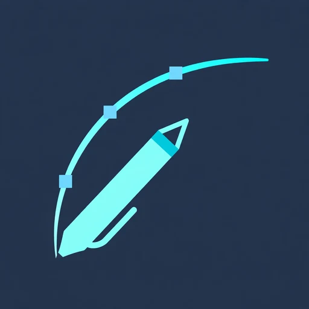

Inkscape
Completely free Design
A free, open-source vector editor for logos, icons, diagrams, and illustrations: shapes that stay sharp at any size.
At a glance
- Free plan
- Everything: pen and node tools for drawing exact shapes, text on paths, gradients, and precise alignment
- Platforms
- Windows, macOS, Linux
- Best for
- logos, icons, posters, or diagrams that must stay sharp at any size
What it is
A free, open-source vector editor for logos, icons, diagrams, and illustrations: shapes that stay sharp at any size. Vector means shapes defined by maths, not by dots, so they scale from a phone icon to a billboard without going blurry. SVG is the web's vector format, and it is Inkscape's native format.
Pricing model
Completely free. There is no paid version, no trial, and no watermark. It is free for personal work and paid client work alike.
What the free plan gives you
- Everything: pen and node tools for drawing exact shapes, text on paths, gradients, and precise alignment
- Saves in SVG and exports PDF, EPS, and PNG
- Opens most .ai files saved with PDF compatibility, meaning Illustrator files from version 9.0 onward
- Free for personal work and paid client work alike
Free-plan limitations
- There is no native CMYK workflow for offset printing. CMYK is the colour system print shops use, so print work needs a conversion step in another tool
- The interface also takes real time to learn
- Download it only from the official site, inkscape.org; if a site asks you to pay for Inkscape itself, it is not official
Features
- Pen and node tools for exact shapes
- Text on paths, gradients, and precise alignment
- SVG-native saving, with PDF, EPS, and PNG export
- Opens most .ai files saved with PDF compatibility
- No paid version, no trial, no watermark
Supported platforms
Windows, macOS, and Linux.
Best use cases
- Students and freelancers making logos, icons, posters, or diagrams that must stay sharp at any size
Pros
- Completely free: no paid version, no trial, no watermark
- True vector files that stay sharp at any size
- SVG-native, with PDF, EPS, and PNG export
- Opens most .ai files saved with PDF compatibility
- Free for personal work and paid client work alike
Cons
- No native CMYK workflow for offset printing; print work needs a conversion step
- The interface takes real time to learn
- Copycat sites exist: download only from the official site, inkscape.org
Official website
The draft names the official site as inkscape.org (domain named, not linked, as the draft gives the domain name only) and warns that any site asking you to pay for Inkscape itself is not the official source.
Last verified: November 2026 (free tiers checked November 2026). If a limit here no longer matches the tool's pricing page, the pricing page is right. Source: the approved article “Best Free Design Tools for Students and New Freelancers (Tested on the Free Version).”